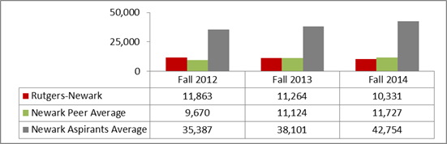
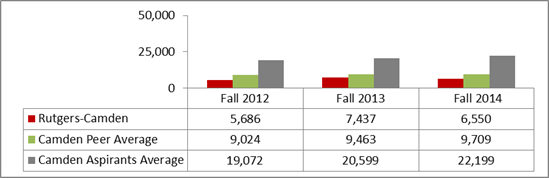

Skip to main content
University Dashboard Indicators - Applications
Rutgers University and Peer Institutions Applications First-time Degree-Seeking Students
Fall 2012–Fall 2014
New Brunswick
New Brunswick Chancellor
RBHS Chancellor
Newark

Camden
